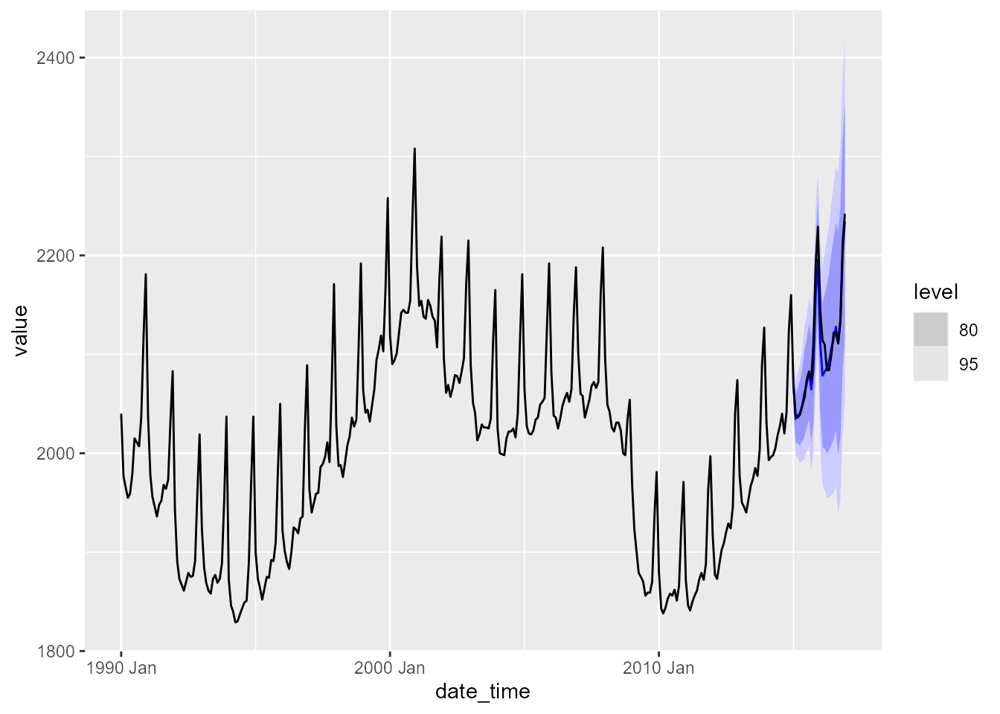

vignettes/vignette_01_intro.Rmd
vignette_01_intro.RmdThe package provides a tidy interface for modeling and forecasting univariate time series using Echo State Networks (ESNs). The model works within the fable framework provided by the fabletools package, which provides the tools to evaluate, visualize, and combine models in a workflow consistent with the tidyverse.
Disclaimer: The echos package is highly experimental and it is very likely that there will be (substantial) changes in the near future. These changes will probably affect the interface (e.g. arguments within ESN()) and the underlying modeling procedure itself.
You can install the development version from GitHub with:
# install.packages("devtools") devtools::install_github("ahaeusser/echos")
The dataset elec_price is a hourly tsibble with day-ahead electricity spot prices in [EUR/MWh] from the ENTSO-E Transparency Platform. The dataset contains time series data from 2019-01-01 to 2019-12-31 for 8 european bidding zones (BZN). In this example, we will only model and forecast the data for Germany (BZN == DE) and for one specific split (split == 176). The training data ranges from 2019-06-25 00:00:00 to 2019-10-02 23:00:00 and we want to forecast the next day (24-steps ahead) from 2019-10-03 00:00:00 to 2019-10-03 23:00:00.
# Prepare dataset data <- elec_price %>% tscv::clean_data() # Setup for time series cross validation n_init <- 2400 # size for training window n_ahead <- 24 # size for testing window (forecast horizon) mode <- "slide" # fixed window approach n_skip <- 23 # skip 23 observations n_lag <- 0 # no lag data <- data %>% tscv::split_data( n_init = n_init, n_ahead = n_ahead, mode = mode, n_skip = n_skip, n_lag = n_lag) # Use only a single time series data <- data %>% filter(BZN == "DE") %>% # filter to bidding zone Germany filter(split == 176) # filter to split 176 # Use only training data for modeling data_train <- data %>% filter(sample == "train")
The function fabletools::model() is used to automatically train an ESN to the time series data. The object mdl is a mable containing the trained ESN.
# Automatic model training of ESN mdl <- data_train %>% fabletools::model("ESN" = ESN(Value)) mdl #> # A mable: 1 x 5 #> # Key: Series, Unit, BZN, split [1] #> Series Unit BZN split ESN #> <chr> <chr> <chr> <int> <model> #> 1 Day-ahead Prices [EUR/MWh] DE 176 <ESN({4,200,1}, {0.95,0.59,0.1})>
The function report is used to get a detailed summary of the trained ESN. From the output below, you get the following information about the trained model:
Inputs: The number of input variablesReservoir: The number of internal states (the reservoir is the hidden layer of an ESN)Outputs: The number of output variables (= response variables)Constant: Indicates whether an intercept term is used or notLags: The lags of the output variable, which are used as model inputInputs: The training data are scaled to the interval (-1, 1)
Random uniform: The input weights matrix and the reservoir weight matrix are drawn from a random uniform distribution with interval (-0.5, 0.5)
alpha: Leakage rate (smoothing parameter)rho: Spectral radius for scaling the reservoir weight matrixlambda: Regularization parameter for the ridge regressiondensity: The density of the reservoir weight matrixdf: Effective Degrees of Freedomaic: Akaike Information Criterionbic: Bayesian Information Criterionhq: Hannan-Quinn Information Criterion# Detailed report of ESN mdl %>% select(ESN) %>% report() #> Series: Value #> Model: ESN({4,200,1}, {0.95,0.59,0.1}) #> #> Network size: #> Inputs = 4 #> Reservoir = 200 #> Outputs = 1 #> #> Model inputs: #> Constant = TRUE #> Lags = 1 24 168 #> #> Differences = 0 #> #> Scaling: #> Inputs = (-1, 1) #> Random uniform = (-0.5, 0.5) #> #> Hyperparameters: #> alpha = 0.95 #> rho = 0.59 #> lambda = 0.1 #> density = 0.1 #> #> Metrics: #> df = 30.12 #> aic = -6.09 #> bic = -6.01 #> hq = -6.06
The function fabletools::forecast() is used to forecast the trained model 24-steps ahead. The object fcst is a fable containing the forecasts of the ESN.
# Forecast models fcst <- mdl %>% fabletools::forecast(h = n_ahead) fcst #> # A fable: 24 x 8 [1h] <UTC> #> # Key: Series, Unit, BZN, split, .model [1] #> Series Unit BZN split .model Time Value .mean #> <chr> <chr> <chr> <int> <chr> <dttm> <dist> <dbl> #> 1 Day-ahead Pri~ [EUR/M~ DE 176 ESN 2019-10-03 00:00:00 N(27, 15) 26.9 #> 2 Day-ahead Pri~ [EUR/M~ DE 176 ESN 2019-10-03 01:00:00 N(28, 30) 27.7 #> 3 Day-ahead Pri~ [EUR/M~ DE 176 ESN 2019-10-03 02:00:00 N(29, 51) 29.0 #> 4 Day-ahead Pri~ [EUR/M~ DE 176 ESN 2019-10-03 03:00:00 N(31, 61) 31.4 #> 5 Day-ahead Pri~ [EUR/M~ DE 176 ESN 2019-10-03 04:00:00 N(40, 65) 39.8 #> 6 Day-ahead Pri~ [EUR/M~ DE 176 ESN 2019-10-03 05:00:00 N(45, 60) 45.2 #> 7 Day-ahead Pri~ [EUR/M~ DE 176 ESN 2019-10-03 06:00:00 N(47, 64) 46.9 #> 8 Day-ahead Pri~ [EUR/M~ DE 176 ESN 2019-10-03 07:00:00 N(46, 64) 46.1 #> 9 Day-ahead Pri~ [EUR/M~ DE 176 ESN 2019-10-03 08:00:00 N(45, 59) 44.6 #> 10 Day-ahead Pri~ [EUR/M~ DE 176 ESN 2019-10-03 09:00:00 N(43, 59) 42.9 #> # ... with 14 more rows
Plot the forecast along the actual values.
tscv::plot_forecast( fcst = fcst, # forecasts as fable data = data, # training and test data split = 176, # only one split is visualized include = 72) # plot only the last 72 observations of training data
